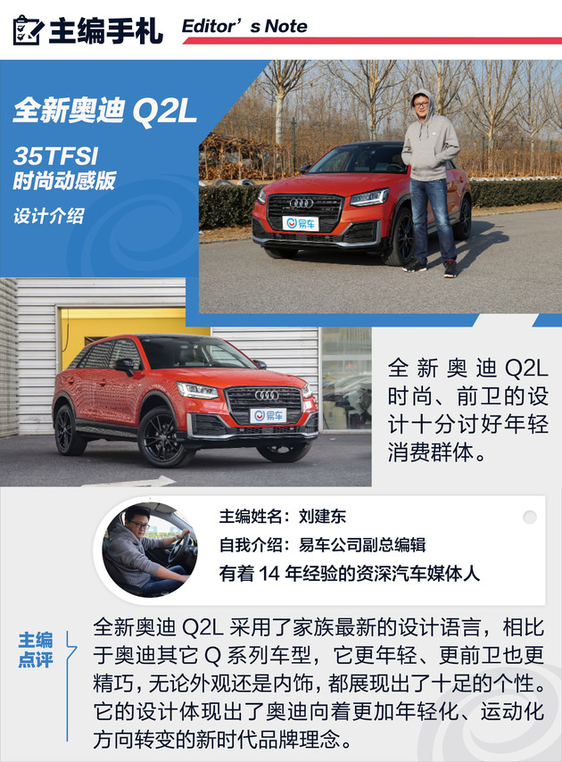
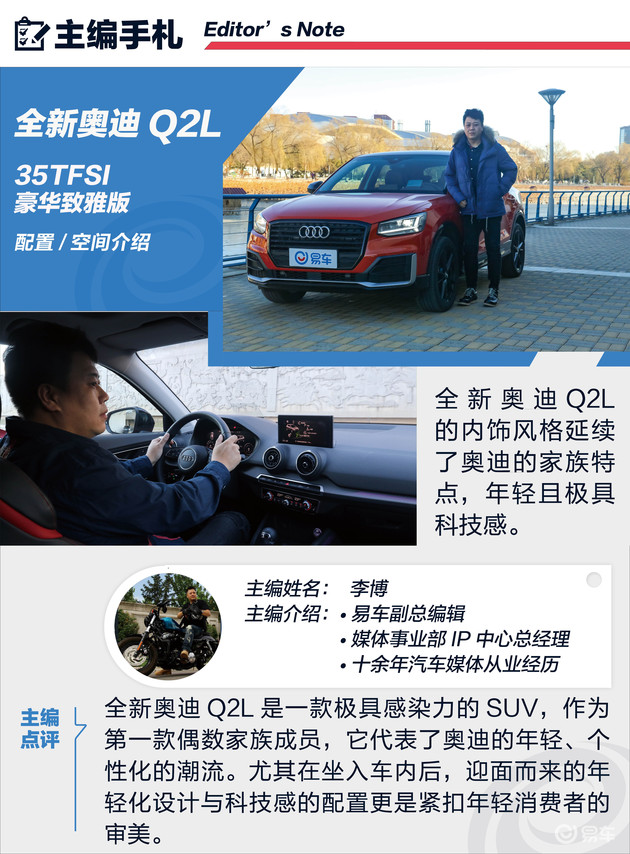
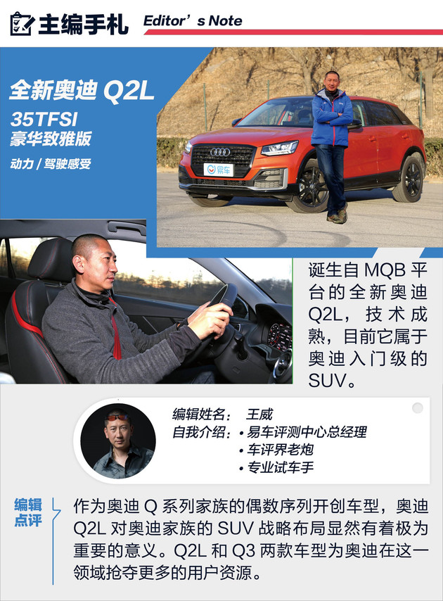

主编评全新奥迪Q2L 三足鼎立 重塑奥迪Q2L潮酷定义
易车 2018-12-25



全新奥迪Q2L搭载了我们熟悉的EA211系列1.4T发动机，匹配7速双离合变速箱，无论是发动机和变速箱的匹配程度，还是说油耗表现，都称得上小排量中最为出色动力总成之一。在性能测试中，9.4秒的加速，37.0米的刹车，6.3L的综合油耗加上拥有不错的驾驶质感，可以说这样的表现足够令人满意。作为主打运动个性化的全新奥迪Q2L来说，由外到内都有可玩性，适合那些预算充足又爱玩的消费者。全新奥迪Q2L在外观细节方面，给年轻消费者留下了很多年轻时尚的细节设计，搭配活泼跳跃的车身颜色，完美的诠释“潮酷”二字，进入车内后，依然有不少惊喜的小设计，红色的安全带、多种风格的氛围灯，加上车内的Carplay、Carlife功能，都能成为年轻消费者购车的加分项，加长后的车身尺寸，也使得全新奥迪Q2L的空间成为了同级车型中主流偏上的水平，而我们已经非常熟悉的EA211系列1.4T发动机匹配7挡双离合的动力组合，已经应用于很多车型当中，可靠性不言而喻。